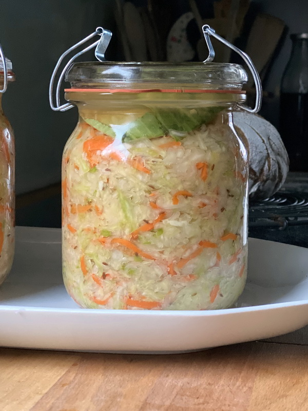

Dies ist eine einfache Website über Sauerkraut.
Es ist ein beliebtes Gericht in Deutschland.
Sauerkraut wird aus grünen Kohlblättern hergestellt.
Es kann auch in verschiedenen Rezepten verwendet werden.
Es ist ein wichtiger Bestandteil der deutschen Küche.
Es ist ein wichtiger Bestandteil der deutschen Küche.
Es ist ein wichtiger Bestandteil der deutschen Küche.

Man braucht irgendwelches Salz.
Du braucht Bügelverschlussgläser!